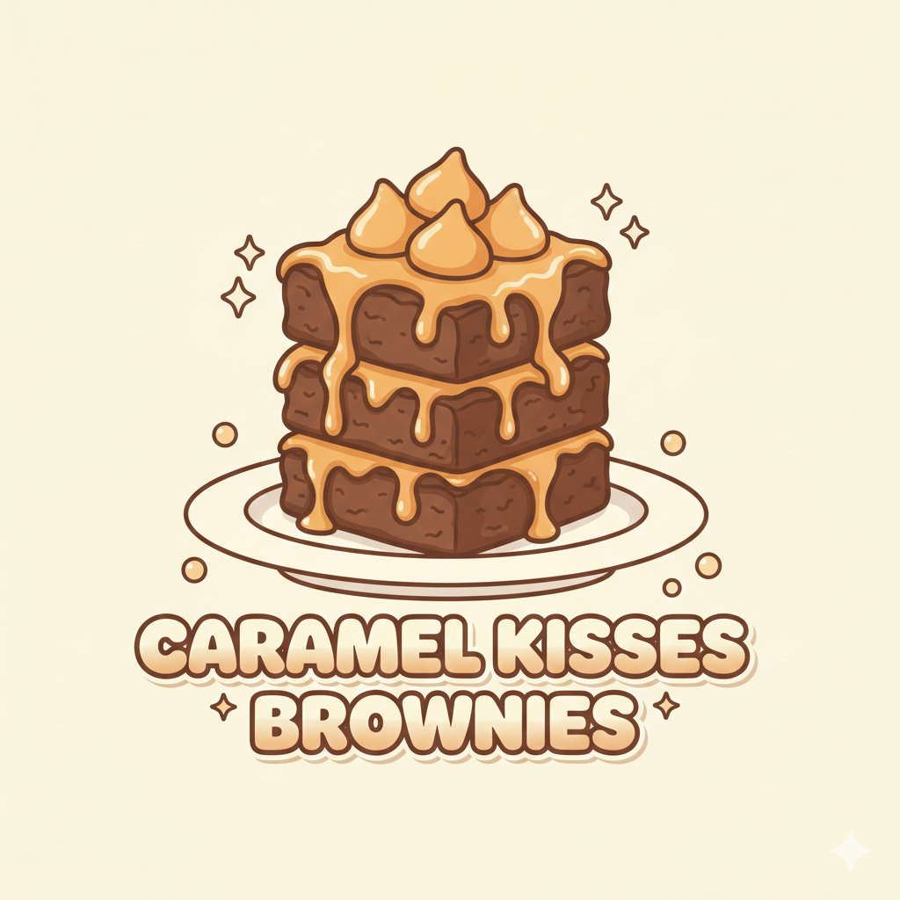

Caramel Kisses Brownies
Description
Rich, fudgy chocolate brownies filled with gooey caramel and topped with chocolate kisses. Perfect for chocolate lovers or special treats!
Ingredients
- 1/2 cup unsalted butter
- 1 cup granulated sugar
- 2 large eggs
- 1 tsp vanilla extract
- 1/3 cup unsweetened cocoa powder
- 1/2 cup all-purpose flour
- 1/4 tsp salt
- 12 caramel candies, unwrapped
- 12 chocolate kisses
Instructions
- Preheat oven to 350°F (175°C) and grease a 9x9-inch baking pan.
- Melt butter and stir in sugar, eggs, and vanilla until smooth.
- Add cocoa powder, flour, and salt. Mix until combined.
- Pour batter into the prepared pan and spread evenly.
- Bake for 20–25 minutes or until a toothpick comes out mostly clean.
- Remove from oven and let cool slightly. Press caramel candies into the brownies, then top each with a chocolate kiss.
- Let brownies cool completely before cutting into squares and serving.
Nutritional Info (per brownie)
- Calories: 250 kcal
- Protein: 3 g
- Fat: 12 g
- Carbohydrates: 32 g
- Fiber: 1 g
- Sugar: 22 g